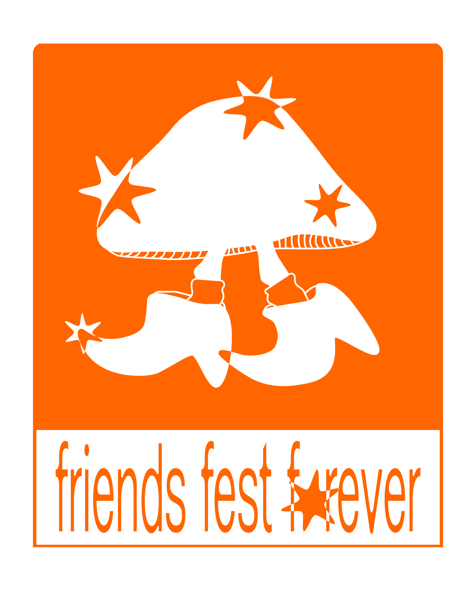
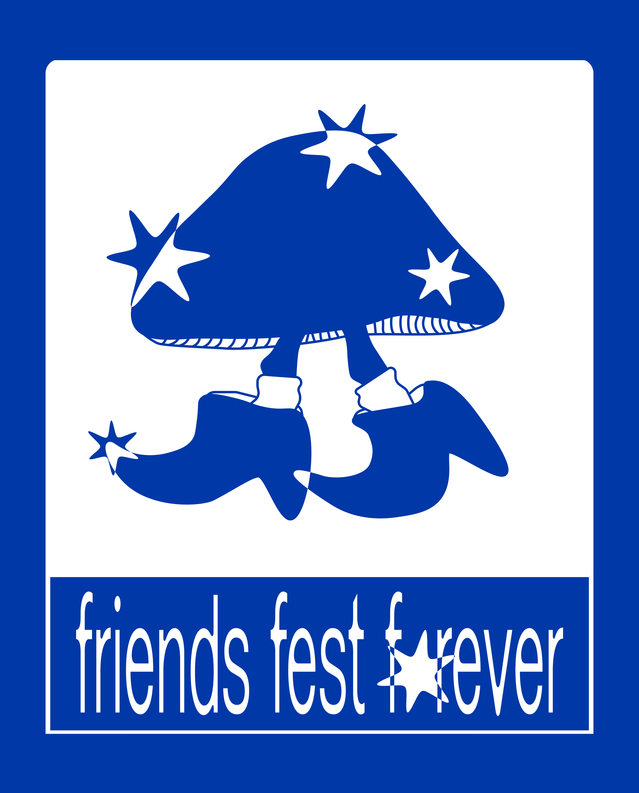

Friends Fest branding
I worked with the organisers of Friends Fest, a small community festival in Squamish, British Columbia, focused on arts, DJs, and live sets by the river. They asked me to create a mascot that captured the cosy, handmade character of the event, with the intention of screen-printing it across their materials (tote bags, shirts etc.).
After a few iterations, Marcel the Mushroom came to be — a simple walking mushroom character wearing cowboy boots. The aim was to create something friendly and distinctive, but also practical for screen-printing: clear shapes, limited details, and strong silhouettes.






Tote, getting some riverside action at the festival (2025)